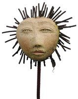
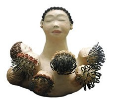
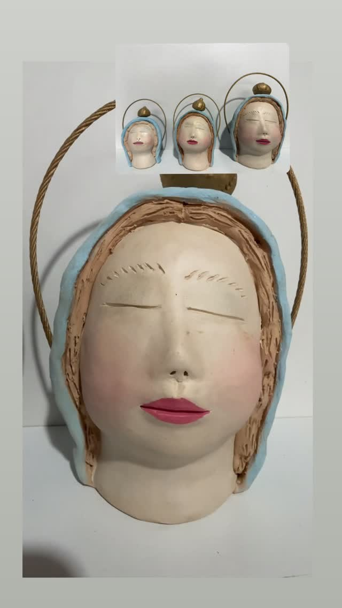
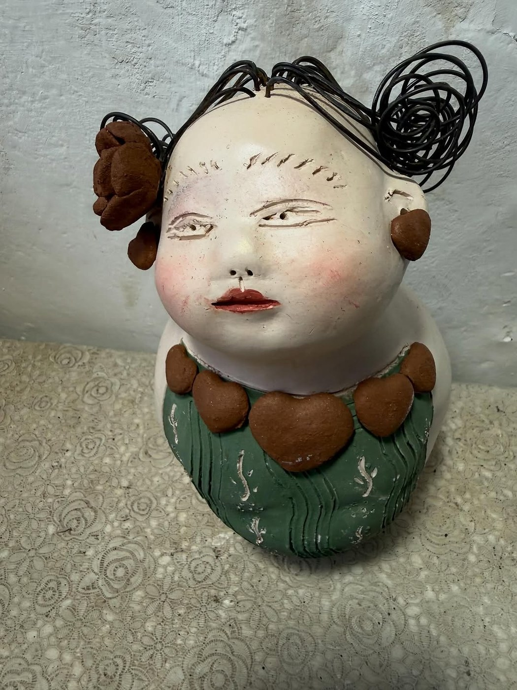
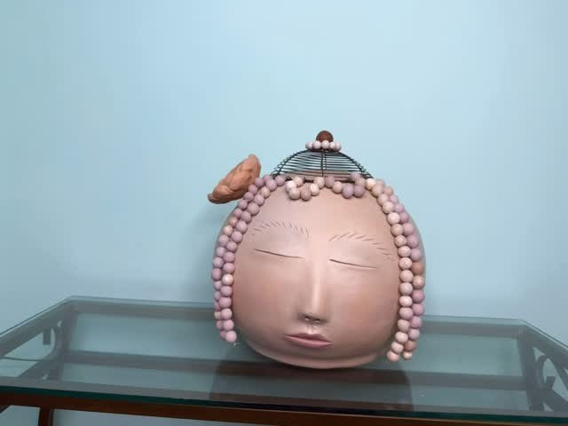
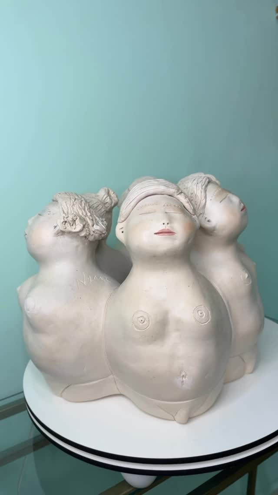

Nené Cavalcanti
Bonecas de cerâmica que atravessam intimidade, humor e reconhecimento.
Maria das Neves Cavalcanti Moreira, Nené Cavalcanti, cria figuras femininas, mães, cabeças e anjos em barro, frequentemente combinando cerâmica com ferro, correntes, pregos e outros materiais.
Maria das Neves Cavalcanti Moreira, Nené Cavalcanti, nasceu em Alagoa Nova, Paraíba, em 1948. Cresceu no sítio Santo Antônio, em uma família numerosa, onde o barro fazia parte das brincadeiras e da imaginação infantil.
Depois de estudar, trabalhar, casar, ter filhos e formar-se em áreas como Enfermagem e Pedagogia, encontrou no curso de Educação Artística e no barro uma forma própria de expressão. Suas mulheres, mães e anjos afirmam uma autoria marcada por cuidado e liberdade criativa.
Suas esculturas em argila incorporam materiais como pregos, parafusos, arames, molas, pedras, porcelanato e ferro, obtendo efeitos originais. A cor também nasce do próprio barro, transformado pela queima.
Suas obras circularam no Brasil e no exterior. Na exposição, Nené aparece como referência de um núcleo familiar feminino de criação, no qual irmãs também se aproximaram da cerâmica.
No barro de Nené, liberdade criativa também é forma de vida.
Para observar na peça
- Mulheres, mães e anjos como temas centrais
- Combinação de barro com ferro, correntes e pregos
- Rostos serenos e volumes arredondados
- Liberdade criativa em oposição à repetição mecânica
Materiais e técnica
Galeria de referências de estilo
Imagens públicas reunidas para reconhecer linguagem, materiais e técnica. As peças da exposição são vistas apenas ao vivo.






Fontes e créditos
- TV Correio — Peças de Nené Cavalcanti/Cavalcante são reconhecidas por celebridades https://www.youtube.com/watch?v=hC2EI_MagRw
- 24ª Feira Nacional de Artesanato — NENÉ CAVALCANTI, Stand EE 040 https://www.youtube.com/watch?v=fIRFuBw1SbQ
- Identificação informada pela equipe/etiqueta da exposição Métis Fonte interna de identificação da peça; dados biográficos públicos ainda em pesquisa.
- Referência de acervo da equipe — OCR e conferência visual Páginas fotografadas/OCR revisado: 022 e 039. Fonte interna de referência da equipe, enviada em 02/07/2026.
- Nené Cavalcanti — A artista https://www.nenecavalcanti.com/blog/2016/09/16/a-artista/
- Paraíba Criativa — Nené Cavalcanti https://paraibacriativa.com.br/artista/nene-cavalcanti/
- Arte do Brasil — Nené Cavalcanti http://www.artedobrasil.com.br/maria_neves.html